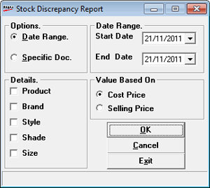

The Stock Discrepancy report provides information about the item-wise quantity difference between purchase order, delivery challan and physically received stock for a specified date range, or for a specific document number. This difference occurs and is recorded during inwards or goods receipt.
How to reach: Reports > Stock > Discrepancy
The Stock Descp. Report window is displayed.

Options: Select Date Range to view discrepancy in stock for a specific period or select Specific Doc. if you want to view stock difference for a specific document. If you have selected Date Range, choose Start Date and End Date. If you have selected Specific Doc., the Doc. Dtls. group replaces the Date Range group. Enter Doc.No.Prefix and Doc No. to generate the report for the document.
Details.: Select Product, Brand, Style, Shade and/ or Size to include the corresponding details in the report.
Value Based On: Select Cost Price or Selling Price to display cost prices or selling prices in the report.
Note: The Cost Price can be hidden by the administrator based on user-wise restriction.